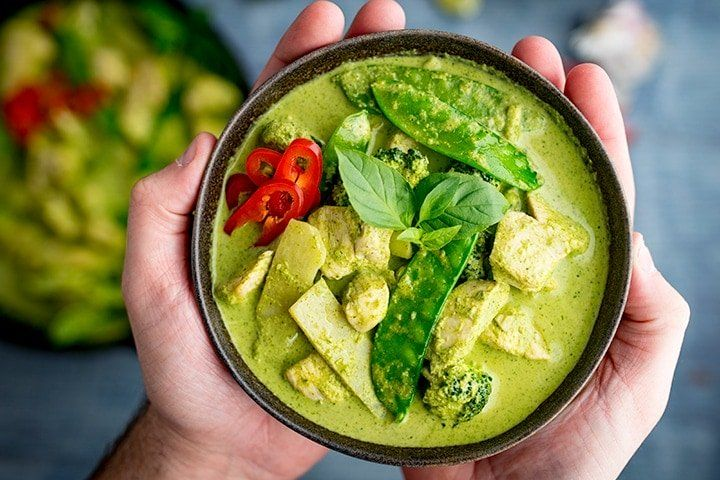

"Unveiling Flavors Through Time: The Epic Saga of Green curry.."
Green curry is a famous Thai dish known for its aromatic and spicy flavors. It originated in Central Thailand and is called "Kaeng Khiao Wan" in Thai, which means "sweet green curry." The dish's history dates back to the late 19th century during the reign of King Rama IV. Green curry is a blend of Thai ingredients like green chili peppers, coconut milk, kaffir lime leaves, and Thai basil. Over time, it has become a beloved and iconic part of Thai cuisine, enjoyed worldwide for its balance of heat and sweetness.
"Bringing Green curry to your kitchen"
Green curry is a flavorful Thai dish known for its aromatic and spicy flavors.
Here's a recipe for making green curry with chicken, but you can substitute other proteins or vegetables as per your preference:
Elevate Your Dish with Exceptional Ingredients
For the Green Curry Paste:
- 2-3 green Thai chili peppers (adjust for spice level)
- 2-3 cloves garlic
- 1 small shallot, chopped
- 1 stalk lemongrass, chopped (use the lower, tender part)
- 1 thumb-sized piece of galangal or ginger, chopped
- 1 teaspoon ground coriander
- 1/2 teaspoon ground cumin
- 1/2 teaspoon shrimp paste (optional)
- Zest from 1 kaffir lime (or use regular lime zest)
- 4-5 fresh kaffir lime leaves, chopped (or use dried leaves)
- 1/4 cup fresh cilantro leaves and stems
- 1/4 cup fresh Thai basil leaves (or regular basil)
- 2-3 tablespoons fish sauce
- 1 tablespoon vegetable oil
For the Curry:
- 1 pound (450 grams) boneless, skinless chicken thighs, cut into bite-sized pieces (or substitute with tofu or shrimp)
- 1 can (13.5 ounces) coconut milk
- 1-2 tablespoons vegetable oil
- 1-2 tablespoons sugar (palm sugar or brown sugar)
- 1-2 cups mixed vegetables (such as bell peppers, bamboo shoots, or eggplant), sliced
- Fresh Thai basil leaves for garnish (or regular basil)
- Cooked jasmine rice for serving
Let's chop, simmer, and sauté our way to gastronomic glory!
Prepare the Green Curry Paste:
1. In a food processor or mortar and pestle, combine all the green curry paste ingredients. Blend or pound until you have a smooth, vibrant green paste.
Cook the Curry:
1. In a large pan or wok, heat 1-2 tablespoons of vegetable oil over medium-high heat.
2. Add the green curry paste to the hot oil and stir-fry for 2-3 minutes until it becomes fragrant and the oil begins to separate.
3. Add the chicken pieces (or your choice of protein) and cook until they start to brown, about 5 minutes.
4. Pour in the coconut milk and bring the mixture to a simmer. Cook for another 5-7 minutes until the chicken is cooked through.
5. Add the sugar and fish sauce to taste, adjusting for your preferred level of sweetness and saltiness.
6. Stir in the mixed vegetables and cook for an additional 3-4 minutes until they are tender but still crisp.
Serve:
1. Serve the green curry hot with steamed jasmine rice.
2. Garnish with fresh Thai basil leaves.
Enjoy your homemade green curry! Adjust the spice level by adding more or fewer Thai chili peppers, and customize it with your favorite vegetables or protein sources.